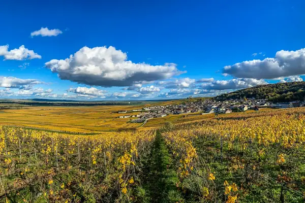

Home › Grapes › Champagne (Chardonnay, Pinot Noir, Meunier)
Champagne (Chardonnay, Pinot Noir, Meunier)

Photo: Adlan on Unsplash
Champagne (Chardonnay, Pinot Noir, Meunier) is a sparkling wine style known for brioche, green apple, citrus. Its best-known homes are Champagne, England.
Primary flavours
- Brioche
- Green apple
- Citrus
- Lemon
Taste profile
Origin and history
The Champagne region east of Paris; the traditional method of a second fermentation in the bottle was refined there in the 1700s and 1800s.
Where it grows
Montagne de Reims (Pinot Noir), Côte des Blancs (Chardonnay), Vallée de la Marne (Meunier) and the Côte des Bar.
Structure
Light to medium body, high acidity and fine, persistent bubbles.
Aromas, young and aged
Young: green apple, lemon and white flowers. Time on the lees adds brioche, toast and almond; old Champagne shows honey, nuts and mushroom.
Ageing
Non-vintage must spend at least 15 months in the cellar and vintage at least 3 years; the best vintages age 20 years or more.
Also known as
Blanc de Blancs (Chardonnay only), Blanc de Noirs (black grapes only).
Good to know
Sweetness levels run from Brut Nature (driest) through Extra Brut, Brut, Extra Dry and Sec to Doux.
Wine regions for Champagne (Chardonnay, Pinot Noir, Meunier)
Champagne (Chardonnay, Pinot Noir, Meunier) wines to try
Real bottles from The Wine Library.
Moët & Chandon Brut Impérial
Champagne · Champagne (Chardonnay, Pinot Noir, Meunier)
Bright and easy: green apple, citrus and a little brioche.
Food: Canapés, fried snacks
Bollinger Special Cuvée Brut
Champagne · Champagne (Chardonnay, Pinot Noir, Meunier)
Full and toasty: baked apple, walnut and brioche from Pinot Noir and oak.
Food: Roast chicken, aged cheese
Krug Grande Cuvée
Champagne · Champagne (Chardonnay, Pinot Noir, Meunier)
A blend of many years: hazelnut, honey, citrus and fine, lasting bubbles.
Food: Lobster, Parmesan
Veuve Clicquot Yellow Label Brut
Champagne · Champagne (Chardonnay, Pinot Noir, Meunier)
Pinot-led and full: apple, brioche, vanilla and a creamy mousse.
Food: Oysters, fried chicken, canapés
Food to pair with Champagne (Chardonnay, Pinot Noir, Meunier)
- Oysters: Briny oysters love crisp, mineral whites: Champagne's bubbles, Muscadet's saline edge and Sancerre's citrus all act like a squeeze of lemon.
- Fish and chips: Crisp acidity and bubbles slice through batter like a squeeze of lemon, which is why fizz with fish and chips is a British favourite.
- Prawn cocktail: Zesty Sauvignon Blanc or brut Champagne refresh the palate after creamy Marie Rose sauce and complement sweet prawns.
- Sushi rolls (maki): Delicate raw fish, rice vinegar and soy suit crisp, unoaked wines; Champagne and peppery Grüner Veltliner refresh without masking the fish.
- Smoked salmon blinis: Champagne is the classic canapé partner: bubbles and acidity cut oily smoked salmon and crème fraîche, and toasty notes suit the blini.
- Lobster thermidor: The rich mustard and cream sauce calls for a full, buttery Chardonnay or the fine bubbles of a Blanc de Blancs Champagne.
- Macaroni cheese: Creamy, cheesy pasta pairs with a rounded Chardonnay that matches its texture, or Champagne whose bubbles refresh the palate.
- Sausage rolls: Flaky, fatty pastry and seasoned pork are cleansed by sparkling wine's acidity, or matched by a light, chillable red.
Appellations that use Champagne (Chardonnay, Pinot Noir, Meunier)
- Sussex PDO · Sussex · Sparkling
- Kent PDO · Kent · Sparkling
- Hampshire PDO · Hampshire · Sparkling
- Dorset PDO · Dorset · Sparkling
- Champagne AOC · Champagne · Sparkling
Similar styles
Explore all grapes in the interactive guide
The Wine Reference newsletter
New wines, stories and career guides, one email a week at most.
Over 18s only. Unsubscribe any time with one click. Your email is stored securely by Kit and never shared.
Support The Wine Reference
This guide is free, with no paywall. If it helped you choose a bottle, you can buy me a glass and keep it growing.
🍷 Buy me a glass